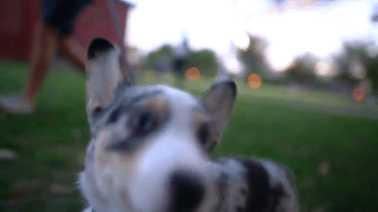

Unidade de saúde animal
11 anos de amor e carinho pelo seu maior parceiro
Unidade de Saúde Animal, fundada em 2009, é dirigida única e exclusivamente por Médicas Veterinárias, o que dá ainda mais crédito para a construção de uma história de dedicação e respeito aos animais e aos seus proprietários. Estamos situados em Curitiba, no bairro do Capão da Imbuia, e realizamos exames, diagnósticos e tratamentos médicos e cirúrgicos em cães, gatos e animais não convencionais.
